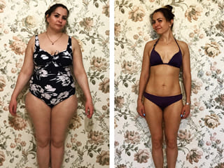
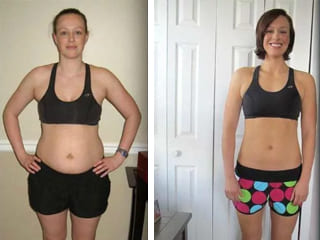
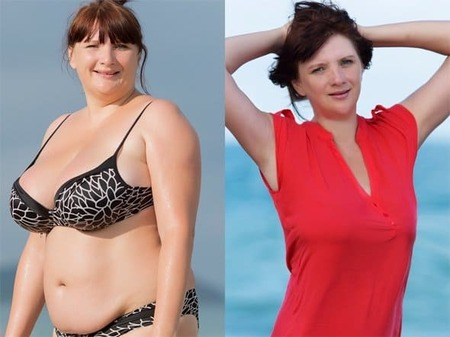

Die deutsche Bloggerin Susanne ist ein Instagram-Star geworden, indem sie locker 50 kg abnahm. Was ist das Geheimnis dieser Verwandlung?
Auch wenn der Sommer vorbei ist und es keinen Grund mehr gibt, Badeanzüge und leichtere Kleidung zu tragen, ist das Thema Abnehmen immer noch aktuell. Vor nicht allzu langer Zeit gab es auf Instagram einen regelrechten Aufschrei zu diesem Thema - eine 32-jährige Bloggerin aus Hamburg hat 50kg abgenommen! Das Mädchen teilte ihre Vorher-Nachher-Fotos, und das Ergebnis war wirklich beeindruckend.
Unser Redaktionsteam beschloss, sie zu kontaktieren und ihr ein paar Fragen zu stellen, wie sie es geschafft hat, abzunehmen. Susanne beantwortete gerne unsere Fragen und teilte nicht nur inspirierende Fotos, sondern auch ein Rezept für Schlankheit.
- Susanne, hallo! Vielen Dank für Ihre Zustimmung zum Interview.
- Hallo! Ich würde mich freuen, wenn meine Abnehmmethode jemandem helfen könnte, und beantworte gerne Ihre Fragen.
- Erzählen Sie uns ein wenig über sich selbst. Wie lange sind Sie schon übergewichtig?
- Um ehrlich zu sein, ist das ein schwieriges Thema für mich. Solange ich mich erinnern kann, war ich dick, ich wog etwa 120 Kilo. Tatsächlich war mir gar nicht bewusst, was für ein Problem mir mein Fett bereitete, denn wenn man lange Zeit dick war, bemerkt man es nicht mehr. Aber jetzt, wo ich schlank bin, wird mir klar, wie viel Zeit ich vergeudet habe.
Ich hatte ständig Kurzatmigkeit, Schmerzen in den Beinen und im Herzen. Ich fühlte mich unsicher und verglich mich ständig mit schlanken Freundinnen. Ich konnte nicht die Kleidung tragen, die ich wollte! Sie können sich nicht vorstellen, welche Freude ich hatte, als ich nach dem Abnehmen einkaufen ging!
- Haben Sie versucht, die Pfunde zu bekämpfen?
- Ich habe von Zeit zu Zeit eine Diät gemacht, aber es hat nicht funktioniert. Ich habe schon immer gerne gut gegessen, deshalb war es für mich unerträglich, mich ständig zu verausgaben und nur Gemüse zu essen. Und ich habe nie gerne Sport getrieben, und mit meinem Gewicht war es nicht leicht, mich anzustrengen.
Jedenfalls habe ich versucht, abzunehmen, aber am Ende habe ich zwar ein paar Kilo abgenommen, aber noch mehr zugenommen.
- Wie sieht es mit Tees zur Gewichtsabnahme, Medikamenten und Überweisungen an einen Ernährungsberater aus? Haben Sie diese Erfahrung auch gemacht?
- Ich habe einen Ernährungsberater aufgesucht, aber er sagte, ich müsse meine Kalorienzufuhr reduzieren, und riet mir, Sport zu treiben. Aber ich bin zu faul, wie die meisten Leute! Ich habe anfangs wirklich alles getan, was der Spezialist mir geraten hat. Aber die Pfunde purzelten so langsam! Mir wurde klar, dass ich mich nicht nur von gesunden Lebensmitteln ernähren und auf Süßigkeiten und Kekse verzichten konnte.
Was die Medikamente aus der Apotheke angeht, so bin ich zum Glück verschont geblieben. Eine Freundin von mir hat eine unangenehme Erfahrung gemacht. Sie nahm früher viele dieser Tees, bis sie herausfand, dass sie Nierenprobleme hatte! Dieser Schlankheitstee, den sie trank, wirkte wie ein Diuretikum, wie Sie sich vorstellen können! Und natürlich hat sie damit nicht viel abgenommen?
- Was hat Sie schließlich dazu bewogen, abzunehmen? Gab es eine Art Schub oder ist es zufällig passiert?
- In der Tat hat mir der Zufall geholfen. Ich hatte Probleme in meinem Privatleben, und als mein Ex-Freund eine schlanke Freundin fand, wurde ich einfach wütend! Mir wurde klar, dass ich mein Übergewicht loswerden wollte, aber ich wusste nicht, wie. Nach einer Diät kam mein Gewicht immer wieder zurück, und jahrelanges richtiges Essen war nichts für mich. Plötzlich wurde ich von einem Forum gerettet, in dem es um Gewichtsabnahme ging.
Dort fand ich Bewertungen von , das mir beim Abnehmen half.
- Warten Sie, aber sagten Sie nicht, dass Sie Abnehmprodukten gegenüber negativ eingestellt sind?
- Es gibt Ausnahmen von jeder Regel. Nicht alle diese Medikamente sind schädlich für die Nieren, und war eines von denen, die mein Vertrauen gewonnen haben. Natürlich habe ich, bevor ich es bestellt habe, viele Bewertungen gelesen, die Zusammensetzung studiert - es ist übrigens rein natürlich und sicher - und ich habe sogar Studien gefunden, die die Sicherheit und Wirksamkeit von bestätigt haben.
Daraufhin beschloss ich, es zu bestellen und mit der Einnahme zu beginnen. Und, wie Sie sehen können, nicht umsonst!
- Erstaunlich! Haben Sie etwas an Ihrer Ernährung und Ihrem Lebensstil geändert, aber gerade erst begonnen, dieses Mittel zu nehmen?
- Ja! Als mein Gewicht schmolz, begann ich, mich mehr zu bewegen, und als mein Bauch nach und nach schrumpfte, begann ich natürlich auch weniger zu essen. Aber ich habe nicht absichtlich etwas verändert!
- Das Ergebnis ist wirklich beeindruckend! Sagen Sie mir, wo haben Sie dieses Produkt gekauft? In der Apotheke?
- Soweit ich mich erinnere, werden dort leider nur unwirksame Abnehmprodukte verkauft. Ich weiß nicht, warum das so ist. wird direkt vom Hersteller verkauft, und deshalb können Sie es mit einem großen Rabatt bekommen! Bitte bestellen Sie einfach über das offizielle Formular! Das Mittel wird oft gefälscht, so dass es am besten ist, direkt über die Verlosung beim Hersteller zu bestellen.
- Wir lassen den Link zur Verlosung unten, damit jeder, der es haben möchte, es bekommen kann. Danke für das interessante Interview, Susanne! Möchten Sie unseren Lesern noch etwas wünschen?
- Ich wünsche Ihnen, dass Sie vor allem mit dem Verstand an das Abnehmen herangehen. Diäten und Hungerkuren bringen Ihnen nur Schaden und Frustration, glauben Sie mir aus meiner Erfahrung. Am besten ist es, auf bewährte und erprobte Produkte zu vertrauen, die erforscht wurden. Ich spreche jetzt vor allem von . Es hat mir geholfen, also wird es auch Ihnen helfen! Seien Sie gesund!
Von den Herausgebern: Nach dem Gespräch beschlossen wir, den Arzt um seine Stellungnahme zur Sicherheit und Wirksamkeit von zu bitten. Das sagte der Experte.
Der Kommentar stammt von Matthias Riedl, einem deutschen Ernährungswissenschaftler, Mediziner und Autor wissenschaftlicher Arbeiten.
" zeichnet sich wirklich durch eine gut abgestimmte Formulierung aus, die für den Körper sicher und wirksam ist. Als ich das erste Mal auf dieses Mittel stieß, war ich angenehm überrascht, denn so etwas hatte ich in Deutschland noch nicht gesehen. Natürlich habe ich ihn vielen meiner Patienten empfohlen, und nicht ein einziges Mal habe ich ein negatives Feedback von ihnen erhalten! Daher kann ich jedem, der abnehmen möchte, bedenkenlos empfehlen!"
wurde klinisch getestet und hat sich als hervorragendes Mittel erwiesen.
Die Ergebnisse der Untersuchung sind wie folgt:
- 97% der Probanden begannen sich besser zu fühlen.
- 100% der Probanden haben im Laufe der Behandlung 7 Kilogramm oder mehr abgenommen.
- 95% der Teilnehmer nahmen während des Kurses 12 Kilogramm oder mehr ab.
- Bei 100% der Probanden traten nach der Einnahme des Arzneimittels keine unerwünschten Wirkungen oder unerwünschten Nebenwirkungen auf.
hat eine rein natürliche Zusammensetzung, was seine Sicherheit und Wirksamkeit erklärt.
Seine Bestandteile:
- Mateblattextrakt und Bitterorangenfruchtextrakt.
- Glucomannan-Congee-Knollenpulver.
- Acetyl L - Carnitin.
- Extrakt aus den Stängeln und Blättern von Jimnema.
Außerdem konnten wir Rückmeldungen von einigen von Susannes Abonnentinnen finden, die ihrem Beispiel gefolgt sind und bestellt haben. Das schreiben sie:
- "Susanne, ich danke dir! Ich habe Ihren Rat befolgt, und ich kann bereits die Ergebnisse sehen! Ich habe in einer Woche sechs Kilo abgenommen. Es ist ein Wunder!"
- "Ich hatte gesundheitliche Probleme - Akne und schlaffe Haut sowie Kurzatmigkeit und Beinschmerzen, obwohl ich erst 23 bin. Aber dank Susanne habe ich von erfahren! Dieses Heilmittel hat mein Leben verändert! Ich habe den Kurs gemacht und bin schlank geworden. Auch meine Gesundheit und mein Hautzustand verbesserten sich, da sie durch mein Übergewicht bedingt waren. Ich genieße das Leben, danke!"
- "Ich war lange Zeit übergewichtig, aber das ist jetzt vorbei. Dank Susanne und dem wunderbaren -Produkt habe ich bereits 13 Kilo abgenommen und ich habe nicht vor, damit aufzuhören!
Wir empfehlen unseren Lesern niemals ungeprüfte Mittel, aber hat in der Tat ausgezeichnete Bewertungen von Experten und Verbrauchern erhalten. Wir würden dieses Produkt gerne jedem empfehlen, der sicher abnehmen möchte. Susanne bat darum, einen Link zu dem Streich zu hinterlassen, da aufgrund seiner wachsenden Popularität häufig manipuliert wird.
Wir lassen den Link zum Produkt unten, damit jeder es bestellen und sicher abnehmen kann. Der Hersteller führt häufig Werbeaktionen durch, so dass Sie mit einem Rabatt erhalten können.
KOMMENTARE:
Paulina Hoffmann
Ich habe diese Kapseln vor ein paar Monaten zu einem hohen Preis bestellt. Sie haben ausgezeichnet geholfen, - 36 kg in einem Monat. Schade nur, dass sie damals ein Vermögen gekostet haben und jetzt fast kostenlos verteilt werden. Beneidenswert ein wenig.
Helga Braun
Gott, was für ein Quatsch. Wo sie gesehen haben, dass Menschen wie von Zauberhand abnehmen, ohne harte Arbeit oder Operation.
Vera Schwarz
Helga, ich kann Ihr Misstrauen verstehen. Ich werde Ihnen nichts beweisen, und ich werde nur die Ergebnisse für einen Monat zeigen.
Linda Krüger
Vera, Sie sind so schön. Das Ergebnis ist toll!
Auch meine Mutter hat mit diesem Medikament abgenommen. Hier sind ihre Vorher- und Nachher-Fotos.
Helga Braun
Wozu brauche ich Ihre Fotos? Sagen Sie mir besser, wo das Fett hingeht.
Helen Becker
Es ist schwierig, mit Ihnen zu reden.
Selina Krause
Mein Kollege hat schon viel über diese erzählt, ich habe beschlossen, es zu versuchen. Für eine Woche habe ich 7 kg abgenommen!
Emilia Wagner
Selina, herzlichen Glückwunsch! Sehr gutes Ergebnis, aber es ist nur Anfang. Versuchen Sie, einen Monat lang zu trinken, so wird es wirklich fantastisch sein.
Anna Meier
Und dann gibt es noch die Möglichkeit zu bestellen? Es ist sehr notwendig, bald am Meer zu fahren, und ich bin einfach nicht gut in Form.
Mila Hartmann
Ja, bestellen Sie, es scheint immer noch auf Lager. Es wird sehr schnell geliefert. Bestellt vorgestern, schon alles bei mir ist.
Sophie Schröder
Ich war schon immer schlank, aber meine Schwester war übergewichtig. Ich habe ihr dieses Mittel bestellt, und sie hat genau wie ich abgenommen! Es ist einfach ein Wunder. Hier ist sie davor und danach! Ich freue mich so für sie, danke.
Charlotte Schulze
Sagen Sie, hat Ihre Schwester beim Abnehmen auf Süßigkeiten und Backwaren verzichtet?
Sophie Schröder
Nicht dass ich wüsste. Sie hat alles wie immer gegessen. Sie hat schon oft versucht, abzunehmen, ist aber gescheitert. Und mit ging alles schnell und einfach!
Amelie Klein
Schenkt mir euren Rat bitte. Ich habe ein halbes Jahr im Fitnessstudio gequält, bin müde wie ein Hund, und die Ergebnisse sind spärlich. Sagt mir, ob es sich lohnt, das Risiko einzugehen und zu bestellen, oder muss ich auf den Trainingsgeräten weiter schwitzen?
Klara Werner
Wenn Sie keine Lust haben, im Fitness Studio zu trainieren, machen Sie es besser nicht mehr. In diesem Fall ist es besser, zu bestellen. Persönlich war ich völlig zufrieden. 14 kg in zwei Wochen sind weg, jetzt setze ich den Kurs fort.
Veronika Lange
Das ist toll! Ich habe es mir vor einem Monat bestellt. Endlich habe ich aufgehört, Angst zu haben, auf die Waage zu kommen!